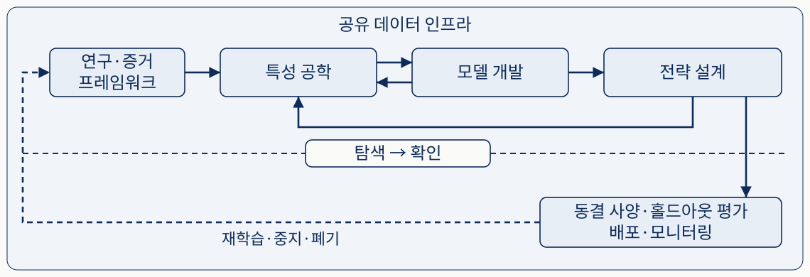
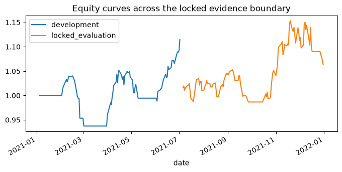
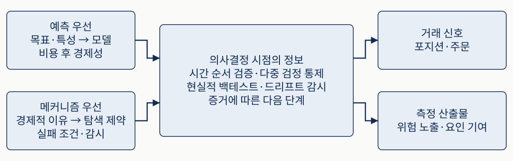
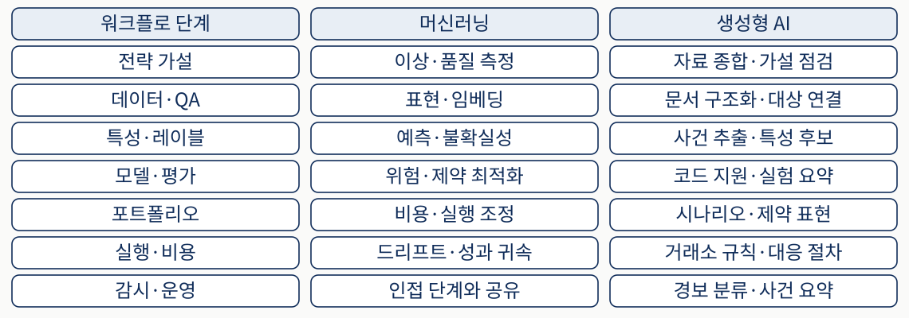
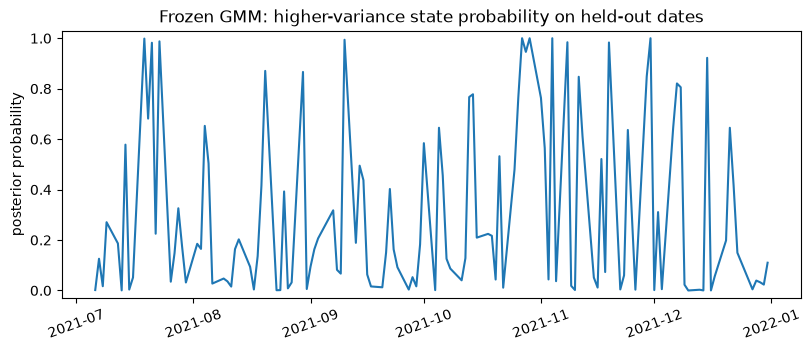
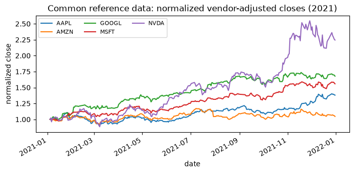

당시 알 수 있었나
나중에 수정된 자료를 과거의 입력에 넣었다면 미래 정보가 섞입니다.
트레이딩을 위한 머신러닝 3판
시장 변화, 증거 경계, 국면 분석으로 읽는 ML4T 연구 절차
높은 과거 수익률 뒤에 남아 있는 세 질문을 먼저 살펴봅니다.
나중에 수정된 자료를 과거의 입력에 넣었다면 미래 정보가 섞입니다.
많은 설정 중 가장 좋은 결과만 남기면 우연을 실력으로 읽기 쉽습니다.
예측이 맞아도 비용·유동성·주문 제약 때문에 이익이 사라질 수 있습니다.
좋은 결과의 숫자와 그 결과를 믿을 근거를 함께 확인합니다.
이 장의 질문은 “최고의 모델은 무엇인가”에서 시작하지 않습니다.
과거 관계가 달라질 때 무엇을 고정하고, 무엇을 다시 시험할지 정합니다.
인과·생성형 AI의 역할을 구분하고, 국면 분석 결과의 의미를 읽습니다.
혼자 연구할 때도 가정·실패 기록·점검을 남겨 다음 판단을 돕습니다.
시간 분할과 GMM 실습으로 입력 시점과 출력의 의미를 확인합니다.
금융의 과거 관측은 같은 조건의 실험을 반복한 자료가 아닙니다.
참여자·정책·자금 사정이 바뀌면 입력과 결과의 관계도 달라질 수 있습니다.
과적합은 과거의 잡음까지 학습해 새 기간의 성능이 떨어지는 현상입니다.
특성·기간·설정을 바꿀수록 최종 결과가 거친 선택 과정을 기록해야 합니다.
모델의 유연성만큼 검증해야 할 선택과 가정도 늘어납니다.
원서의 2020–2025년 사례는 다음 위기의 예측 공식이 아닙니다.
| 원서의 사례 | 달라진 조건 | 시험받은 가정 |
|---|---|---|
| 팬데믹 · 2020 | 상관·유동성·중개 기능의 급변 | 분산과 체결이 평소처럼 유지된다 |
| 밈 주식 · 2021 | 심리·포지셔닝 자금 흐름의 지속 | 가격이 보유 기간 안에 되돌아온다 |
| 인플레이션 · 2021–2023 | 주식·채권의 동반 움직임 변화 | 저물가 때의 관계로 헤지가 된다 |
| 초대형주 집중 | 소수 종목이 지수 수익을 좌우 | 지수 보유가 고른 위험 노출이다 |
평균회귀의 방향이 맞아도 기다리는 시간과 손실 한도를 견디지 못할 수 있습니다.
모든 변화가 갑작스러운 단절로 나타나는 것은 아닙니다.
| 개념 | 무엇을 묻나 | 이해를 위한 예 |
|---|---|---|
| 구조적 단절 | 언제 생성 과정이 갑자기 바뀌었나 | 제도 변화 전후 거래 행태가 바뀜 |
| 국면 | 어떤 상태가 비교적 지속되나 | 낮은 변동성 기간과 높은 변동성 기간 |
| 데이터 드리프트 | 입력의 분포가 달라졌나 | 거래량 값의 범위가 커짐 |
| 개념 드리프트 | 입력과 결과의 관계가 달라졌나 | 같은 거래량 변화가 다른 수익을 예고함 |
거래량 변화는 공급자의 단위 변경일 수도 있습니다. 경보를 곧바로 재학습 명령으로 읽지 않습니다.
적응적 시장 가설은 시장 효율성을 영원히 고정된 성질로 보지 않습니다.
많은 참여자가 같은 신호를 이용하면 그 수익 기회가 줄어들 수 있습니다.
환경이 달라지면 이전에 부진했던 전략이 다시 작동할 수도 있습니다.
신호 약화, 일시적 잡음 증가, 거래 여건 변화를 구별해야 대응을 정할 수 있습니다.
원서가 강조하는 우위는 가정을 시험하고 악화에 대응하는 반복 과정입니다.
CRISP-ML(Q)는 머신러닝 과정에 품질 보증(QA)을 포함한 틀입니다.

범위·성공 기준 → 데이터 정제·특성 → 학습·튜닝 → 검증 → 시스템 통합 → 감시.
다음 단계로 넘길 근거를 확인합니다. 정상 실행만으로 당시 거래 가능성이 보장되지는 않습니다.
감시 결과에 따라 모델을 갱신하거나 연구 범위부터 다시 정합니다.
예측 정확도는 비용과 위험을 고려한 성과 평가로 이어져야 합니다.
실행 오류가 없어도 연구의 판단은 잘못될 수 있습니다.
| 실패 유형 | 어떻게 나타나는가 |
|---|---|
| 서사적 과적합 | 결과를 본 뒤 그럴듯한 경제적 이야기를 붙입니다. |
| 정보 누출 | 그 당시 알 수 없던 정보를 입력으로 씁니다. |
| 선택 편향 | 많은 실험의 우승자를 우연과 구분하지 못합니다. |
| 구현 판단의 실패 | 비용·체결 제약을 무시하고 성과를 읽습니다. |
| 매몰 비용 | 들인 노력과 과거 성공 때문에 쇠퇴한 전략을 유지합니다. |
다음 절에서는 데이터·평가·거래·감시 단계에 대응을 배치합니다.
여러 전략이 공유하는 데이터 기반 위에서 전략 연구를 반복합니다.

바깥은 공유 데이터, 위는 특성·모델·전략의 탐색입니다. 점선 아래에서 사양을 고정해 확인하고, 감시 결과는 재검토로 돌아갑니다.
데이터가 한 번 준비되면 끝나는 일방향 순서도가 아닙니다.
Point-in-time은 의사결정 당시 알 수 있던 자료와 버전을 맞추는 원칙입니다.
| 자료의 시점 | 이해를 위한 실적 예 | 거래 판단에 쓸 수 있는가 |
|---|---|---|
| 3월 말 | 분기 실적의 관측 대상일 | 4월에는 아직 발표되지 않았습니다. |
| 5월 | 실적 최초 발표 | 발표 이후에는 그때 공개된 버전을 씁니다. |
| 6월 | 실적 정정 | 6월 수정치를 5월에 알았던 값으로 쓰지 않습니다. |
데이터의 단위·기업행동·식별자·공개 시각과 버전을 함께 관리합니다.
평가 대상은 데이터 선택부터 거래까지 이어지는 연구 파이프라인입니다.
| 고정할 조건 | 구체적으로 남길 내용 |
|---|---|
| 의사결정 시점 | 언제 판단하고 어떤 정보까지 사용하는가 |
| 대상·제약 | 당시 종목 집합, 유동성·규모·공매도 한도 |
| 레이블·기간 | 예측 대상, 진입·청산 시각과 보유 기간 |
| 비용 모형의 종류 | 스프레드·슬리피지·차입·시장 충격 중 무엇을 반영하는가 |
| 평가 절차 | 시간 분할·홀드아웃·지표·실험 기록 |
비용의 종류와 추정 절차를 먼저 정한다는 뜻입니다. 추정값을 영원히 같은 숫자로 두는 것은 아닙니다.
특성은 입력이고 레이블은 학습할 목표입니다. 목표가 바뀌면 평가도 달라집니다.
입력과 이후 결과의 관계가 있는지, 기간에 따라 달라지는지 살핍니다. 정보 계수(IC)는 그 상관을 보는 초기 지표입니다.
워크포워드는 이 과정을 시간 순서대로 반복합니다. 매개변수 선택도 이 경계 안에서 합니다.
여러 날의 수익을 레이블로 쓰면 학습 레이블의 끝이 평가 기간에 들어갈 수 있습니다. 겹친 정보도 처리해야 합니다.
높은 IC나 복잡한 모델 하나가 비용 후 수익을 입증하지는 않습니다.
“상승 가능성이 높다”는 출력만으로 진입 시각이나 보유 규모가 정해지지 않습니다.
진입·청산 기준, 보유 기간, 비중, 거래하지 않을 조건을 정합니다.
스프레드(매수·매도 호가 차이), 슬리피지(기준과 체결 가격 차이), 시장 충격을 반영합니다.
레버리지·집중도·유동성·위험 한도를 넣어 가치가 사라지면 특성과 모델을 다시 검토합니다.
백테스트는 어떤 가정에서 전략이 성립하지 않는지 찾는 반증 시험입니다.
실거래에는 주문 지연·대기열·유동성 변화가 추가됩니다.
| 층위 | 무엇을 관측하나 | 구별할 문제 |
|---|---|---|
| 데이터 | 결측·지연·타임스탬프 정렬 | 모델이 받는 자료 자체 |
| 신호 | 특성 변화·예측 보정·목표 관계 | 예측 관계의 약화 |
| 체결 | 슬리피지·체결률·시장 충격 | 신호를 거래로 바꾸는 비용 |
| 위험 | 노출·한도 위반·낙폭 | 허용 범위를 벗어난 위험 |
데이터 지연을 고칠 때와 모델을 재학습할 때의 조치는 다릅니다. 중지·폐기 조건도 사전에 정합니다.
홀드아웃은 최종 확인을 위해 탐색에서 따로 남겨 둔 자료입니다.
100개 설정을 비교해 하나를 골랐다면 실패한 후보도 선택 과정에 포함됩니다. 많은 시도를 거친 최고 성과는 한 번 시험한 성과와 확신의 정도가 다릅니다.
마지막 기간을 본 뒤 비용 가정이나 기간을 바꾸었다면 그 자료가 선택에 사용됐습니다. 이를 독립적인 최종 확인이라고 부를 수 없습니다.
선택 조정 추론은 여러 후보 중 하나를 골랐다는 사실을 통계적 판단에 반영합니다.
가이드 코드 발췌 · AAPL·AMZN·GOOGL·MSFT·NVDA의 2021년 일수익률을 동일 비중으로 평균합니다. 최근 20일 평균이 양수이면 다음 날 보유합니다.
from harness import load_reference_prices
# BOOK_ROOT: 가이드 환경 셀의 교재 루트
# 가격: 동봉 표본의 close × adj_factor
prices = load_reference_prices(BOOK_ROOT)
returns = prices.pct_change(fill_method=None).mean(axis=1).dropna()
hold = returns.rolling(20).mean().shift(1).gt(0)
strategy = returns * hold.astype(float)
cut = len(strategy) // 2
parts = {"탐색": strategy.iloc[:cut], "확인": strategy.iloc[cut:]}shift(1)은 당일 수익을 본 뒤 당일 보유 여부를 정하는 누출을 피합니다. 20일이 없는 초기 구간은 보유하지 않습니다.
가이드 재실행 결과 · 2021년 5종목 · 비용 차감 전 · 20일 규칙 고정
| 구간 | 평균 수익률 연율화 | 연율 변동성 | 샤프 · 무위험 0 | 최대 낙폭 |
|---|---|---|---|---|
| 탐색 · 125일 | 22.9513% | 14.8492% | 1.5456 | −9.8731% |
| 확인 · 126일 | 14.1179% | 18.7353% | 0.7535 | −7.7670% |
수익률은 일평균 × 252(복리 성장률 아님)입니다. 샤프는 평균 ÷ 표준편차 × √252입니다. 변동성은 산포, 낙폭은 최고점 대비 하락입니다.
확인 샤프가 낮다는 사실만으로 국면 변화가 원인이라고 단정할 수 없습니다.
비용·실제 체결·생존 편향·다중 검정을 해결한 전략 검증은 아닙니다.
앞 125일과 뒤 126일의 경로를 같은 시작값 1에서 비교합니다.

파랑 development는 탐색 125일, 주황 locked_evaluation은 확인 126일입니다.
가로축은 날짜, 세로축은 고정 보유 규칙의 누적 자산입니다. 두 선은 이어진 하나의 계좌가 아닙니다.
짧은 표본과 선택된 다섯 대형주에 한정되며 실거래 성과를 재현하지 않습니다.
이 결과의 역할은 성과를 기간과 조건별로 분리해 읽는 법을 보여 주는 것입니다.
새 도구를 넣어도 데이터·평가·거래의 제약은 유지됩니다.
어떤 요인을 바꾸면 결과가 어떻게 달라지는지 묻습니다. 메커니즘과 필요한 가정을 분명하게 만드는 데 도움을 줍니다.
문서 정리, 사건·특성 후보 추출, 코드 작성과 실험 요약을 돕습니다. 사실 확인과 시간 경계는 별도로 검증합니다.
도구가 만든 후보도 평가를 거쳐야 증거가 됩니다.
예측 우선과 메커니즘 우선은 서로 섞어 사용할 수 있는 연구 관점입니다.

왼쪽은 서로 섞을 수 있는 출발점, 가운데는 공통 검증, 오른쪽은 산출물입니다. 두 관점 모두 거래 신호와 측정에 연결될 수 있습니다.
경제적 설명과 표본 외 증거는 서로 대신할 수 없습니다.
먼저 무엇을 만들고 어디에 사용할지 정해야 평가 기준이 선명해집니다.
| 산출물 | 어디에 쓰나 | 무엇이 틀렸다는 뜻인가 |
|---|---|---|
| 거래 신호 | 포지션·주문 결정 | 비용과 제약을 반영하면 거래 가치가 남지 않음 |
| 측정 결과 | 헤지·위험 예산·노출 평가 | 추정이 편향되거나 잘못된 위험 구조를 설명함 |
요인 프리미엄은 공통 노출 보유에 따른 수익의 추정이고, 위험 기여도는 전체 위험을 노출별로 나누는 측정입니다.
거래로 수익을 얻었다는 사실만으로 위험 기여도 추정이 정확하다고 결론낼 수 없습니다.
이해를 위한 예: 긍정적인 기사와 주가 상승이 함께 관측됐습니다.
기사가 새로운 정보를 전달해 주가에 영향을 주었을 수 있습니다.
이미 공개된 좋은 실적이 기사와 주가 양쪽에 영향을 주었을 수 있습니다.
교란 변수는 입력과 결과 양쪽에 영향을 주는 요인입니다. 어떤 경로를 가정하고 무엇을 통제할지 밝혀야 합니다.
변수를 무조건 많이 통제해도 해결되지 않습니다. 구조에 따라 통제가 오히려 추정을 왜곡할 수 있습니다.
문서 구조화부터 사건 요약까지 연결되지만, 각 행은 독점적인 역할 분담이 아닙니다.

왼쪽에서 단계·ML·생성형 AI의 보조 작업을 비교합니다. 드리프트 탐지는 실행·비용 행에 놓였지만 감시에서도 쓰이며 역할은 겹칩니다.
생성된 내용이 실제 출처에 있고 당시 사용할 수 있었는지는 별도로 확인합니다.
생성형 AI의 속도는 평가를 생략할 근거가 되지 않습니다.
설득력 있는 문장이라도 원문에 없는 사실이나 원인을 만들어 낼 수 있습니다.
문서 날짜가 맞아도 모델 학습에 이후 사건이 들어 있으면 미래 지식이 섞일 수 있습니다.
특성·코드·전략 변형이 늘어나면 선택의 자유도와 오류 경로도 늘어납니다.
출처·시점을 확인하고 생성한 변형까지 실험 기록에 넣습니다.
국면은 수익뿐 아니라 변동성·상관·유동성 등이 함께 달라지는 환경입니다.
| 과제 | 어떤 자료로 무엇을 묻나 | 해석 범위 |
|---|---|---|
| 사후 레이블링 | 전체 과거에서 반복된 상태를 분류 | 당시 알았던 상태는 아님 |
| 백테스트 조건화 | 이미 계산한 성과를 상태별로 나눔 | 취약성 점검이며 사후 레이블로 재매매하지 않음 |
| 실시간 모니터링 | 결정 시점까지의 자료로 변화를 탐지 | 시간 순서로 경보와 위험 조치를 평가 |
낮은 변동성에 맞춘 포지션도 변동성이 오르면 같은 규모에서 더 큰 위험을 갖습니다.
원서 예제는 AQR의 장기 월별 요인 자료를 사용합니다. 이번 5종목 일봉 실습과 다른 자료입니다.
| 입력 스타일 | 뜻을 읽는 출발점 |
|---|---|
| 가치 | 가격과 기초 가치의 관계 |
| 모멘텀 | 최근 추세가 지속되는 성질 |
| 캐리 | 가격 변화 이외의 보유 보상 |
| 방어 | 상대적으로 방어적인 특성에 대한 노출 |
정답 상태 이름을 미리 주지 않고 비슷한 관측을 묶는 비지도 학습으로 상태를 찾습니다.
질문은 한 종목의 방향보다 여러 스타일이 어떤 상태에서 함께 움직이는가입니다.
가우스 혼합 모델(Gaussian Mixture Model)은 각 상태를 평균과 공분산으로 표현합니다.
여러 수익률을 함께 봅니다. 공분산은 변수들이 함께 움직이는 정도를 담습니다.
각 관측이 상태별로 얼마나 잘 맞는지 계산하고 그 확률로 평균·공분산·비중을 다시 추정합니다.
학습한 상태에 현재 관측이 얼마나 잘 맞는지 표현합니다. 모든 상태 확률을 더하면 1입니다.
평균이 1%, 표준편차가 2%인 입력에서 3%의 표준화 값은 (3−1)÷2=1입니다.
각 성분의 가중 밀도를 모든 성분의 가중 밀도 합으로 나눕니다.
\(z\): 표준화한 관측 벡터 · \(k\): 읽으려는 상태 · \(K\): 성분 수 · \(j\): 분모에서 합산하는 상태 번호.
\(\pi_k\): 성분 비중 · \(\mu_k\): 평균 벡터 · \(\Sigma_k\): 공분산 행렬.
\(\mathcal{N}\)은 그 성분이 관측을 얼마나 잘 설명하는지 나타내는 정규분포의 밀도입니다.
이 값은 다음 날 수익이 날 확률이나 위기 발생 확률이 아닙니다.
원서에서는 2–6개 상태를 비교한 뒤 적합도와 해석 가능성을 함께 살핍니다.
AIC는 적합도와 복잡도를 함께 고려하며 작을수록 선호됩니다. 하지만 이 사례의 6상태는 실루엣이 거의 0이고 1950년 이후가 잘게 나뉩니다.
실루엣은 군집 분리도의 지표이며 0에 가까우면 뚜렷하게 나뉘지 않았다는 뜻입니다. 원서는 이 사례에서 2상태의 안정성과 해석을 택합니다.
Risk-On·Risk-Off라는 이름은 시장 결과를 본 뒤 붙인 사후 해석입니다.
원서 보고값 · AQR 장기 요인 분석 · 전체 분석 재실행 결과가 아닙니다.

Risk-On 9.8%, Risk-Off 12.7%. 겹치는 창에 여러 상태가 섞일 수 있습니다.
해당 상태 수익률의 변동성은 8.6%, 19.1%입니다.
비율도 약 1.30배와 2.22배로 다릅니다. 한 집계가 다른 집계의 재현값은 아닙니다.
원시 연도별 곡선과 국면 음영은 복원하지 않고 책의 두 집계만 비교했습니다.
아래는 원서의 보고값입니다. 상태 이름은 사후에 붙였습니다.
| 측정값 | Risk-On | Risk-Off |
|---|---|---|
| 주식시장 샤프 | 1.11 | 0.12 |
| 최대 낙폭 | −23% | −77% |
| 가치 스타일 연율 수익률 | +1.6% | +5.3% |
원서는 98년 동안 267회 전환, 평균 약 4개월 간격을 보고합니다. 일정 주기로 바뀐다는 예측은 아닙니다.
국면은 위험과 요인 노출의 차이를 읽는 언어입니다. “Risk-On이면 매수”가 검증됐다는 뜻은 아닙니다.
공식 예제는 FRED 월별 네 입력을 정렬·표준화하고 4성분 GMM으로 묶습니다.
| 입력 | 측정하는 값 | 먼저 확인할 것 |
|---|---|---|
| UNRATE | 실업률 | 관측월과 발표 시각 |
| DFF | 연방기금금리 | 단기 정책금리의 수준 |
| T10Y2Y | 10년물 금리 − 2년물 금리 | 금리차의 단위와 부호 |
| CPIAUCSL | 소비자물가지수의 전년 대비 변화율 | 원시 지수 수준을 그대로 쓰지 않음 |
1년 전 지수 100, 현재 104이면 전년 대비 4%입니다. 이는 변환 설명용 예이며 실제 관측값은 아닙니다.
상태 이름을 얻는 일과 그 상태의 실시간 유용성을 검증하는 일은 다릅니다.
높은 실업률·낮은 금리 등에 “위기”라는 이름을 붙일 수 있지만 이후 수익의 정답은 아닙니다.
신용·통화·주택·변동성 지표를 추가하고 계층적 군집화로 가까운 관측을 묶어 나무를 만듭니다.
원서의 이 값은 나무가 원래 관측 간 거리를 얼마나 보존하는지 측정합니다. 예측 성공률 71%가 아닙니다.
월별 정렬과 표준화만으로 당시 자료의 공개·수정 시점 문제가 해결되지는 않습니다.
원서 그림의 저장 보고값 · 변동성과 이전 최고점 대비 낙폭을 따로 읽습니다.

국면별 수익률의 산포를 비교합니다.
전체 가격 경로의 이전 최고점 대비 하락을 계산한 뒤 해당 국면 날짜의 최솟값을 집계합니다.
“회복기에 새로 투자하면 53% 손실”이라는 뜻이 아닙니다. 이전 하락과 상태가 붙은 시점을 함께 봅니다.
월별 국면 시간띠는 재계산하지 않았습니다. 이 그림은 매매 시점이나 인과 효과를 입증하지 않습니다.
그 시점까지의 입력과 이후 경보 성능으로 평가해야 합니다.
| 전략 관점 | 먼저 물을 취약성 |
|---|---|
| 모멘텀 | 상관 급등과 반전이 겹칠 때 어떤 손실이 생기는가 |
| 캐리 | 자금 조달 압박과 정책 변화에 얼마나 민감한가 |
| 평균회귀 | 변동성이 커지고 유동성이 줄면 보유·청산을 감당하는가 |
전체 표본의 사후 분류 품질을 실시간 경보 성능으로 옮기면 선견 편향이 생깁니다.
감시 통계량과 사전에 정한 위험 조치를 연결합니다. 모든 전략에 같은 임계값을 적용하는 규칙은 아닙니다.
같은 2021년 5종목을 쓰되 이번에는 하루의 다섯 수익률을 하나의 벡터로 넣습니다.

표준화 평균·표준편차와 2상태 GMM 모수를 추정합니다.
고정한 변환과 모수로 상태 확률을 계산합니다. 이 자료로 다시 학습하지 않습니다.
시간을 나눠도 원자료의 시점 적합성과 데이터 의미 검증은 별도로 필요합니다.
확인 구간에서 상태 수와 전처리 설정을 골라 바꾸지 않습니다.
가이드 코드 발췌 · 앞 실습과 달리 종목별 수익률을 평균하지 않습니다.
from sklearn.preprocessing import StandardScaler
from sklearn.mixture import GaussianMixture
# prices: 앞에서 불러온 동일한 5종목 가격 표
r = prices.pct_change(fill_method=None).dropna() # 251행 × 5열
cut = len(r) // 2
train, test = r.iloc[:cut], r.iloc[cut:]
scaler = StandardScaler().fit(train)
model = GaussianMixture(n_components=2, covariance_type="full",
n_init=10, reg_covar=1e-6, random_state=20260830
).fit(scaler.transform(train))
prob = model.predict_proba(scaler.transform(test))fit(train)으로 추정하고 transform(test)에 그대로 적용합니다. full 공분산은 종목 간 공동 움직임을 포함합니다.
학습된 표준화 공간의 공분산 trace를 비교합니다. trace는 대각 원소인 분산의 합입니다.
| 가이드 재실행 출력 | 값 | 읽는 법 |
|---|---|---|
| 상태 0의 공분산 trace | 4.847327 | 두 성분 중 총 산포가 더 큼 |
| 상태 1의 공분산 trace | 3.891603 | 같은 표준화 공간에서 비교 |
| 확률이 0–1이고 합이 1 | True | 출력의 확률 범위 확인 |
학습 날짜가 확인 날짜보다 앞서고, 표준화기는 학습 구간만 보았다는 점도 실행에서 확인했습니다.
이 trace는 금전 손실이나 바스켓의 포트폴리오 변동성 자체가 아닙니다.
가이드 재실행 결과 · 학습에서 고른 큰 산포 성분(상태 0)의 소속 확률입니다.

그날의 다섯 수익률이 학습된 큰 산포 성분에 얼마나 잘 맞는지 읽습니다.
당일 종가 수익률이 입력입니다. 그 종가 이전에 이미 알았던 신호로 사용할 수 없습니다.
다음 날 수익·위기 확률, 상태 수의 최적성, 위험 조치의 효과는 검증하지 않았습니다.
원서의 장기 AQR 분석과 데이터·목적이 다릅니다. 원서의 Risk-On·Risk-Off 이름을 그대로 붙이지 않습니다.
혼자 연구하면 가설·구현·평가를 같은 사람이 담당합니다.
데이터·실행·위험 담당자가 좋은 백테스트 밖의 제약을 서로 확인할 수 있습니다. 기관이라는 이유만으로 성공이 보장되지는 않습니다.
마음에 드는 결과를 지키도록 판단이 움직이지 않게 가정·성공 기준·실패 기록을 남겨야 합니다.
두 환경 중 누가 우월한가보다 자신의 연구에서 빠진 검토 관점을 찾습니다.
혼자 연구할 때 원서가 구분한 네 가지 문제입니다.
| 문제 | 구체적인 모습 |
|---|---|
| 목표 기준 이동 | 샤프가 기준에 미달하자 낙폭이 작다는 이유로 성공을 다시 정의함 |
| 낙관적 가정의 누적 | 체결·비용·규모·기간이 모두 유리해야만 수익이 남음 |
| 기록 없는 유연성 | 많은 설정 중 마지막 후보만 남김 |
| 늦은 거래 가능성 발견 | 모델을 다듬은 뒤 비용·지연을 감당하지 못함을 발견함 |
결과에 맞춰 성공 기준을 바꿨다면 계산을 다시 해도 다른 질문에 답한 것입니다.
기록은 반복을 막기보다 최종 결과가 어떤 선택에서 나왔는지 보여 줍니다.
무엇을 언제 알고 왜 즉시 가격에 반영되지 않는지 적습니다. 비용·용량 때문에 일찍 끝낼 조건도 정합니다.
수정 지표·기업행동·식별자·거래 시각을 점검해 “그때 무엇을 알았나”에 답합니다.
다른 시간 분할과 타당한 국면, 작은 전처리 변경에서 관계가 유지되는지 봅니다.
아주 좁은 설정에서만 성립하는 결과는 확인된 전략이 아니라 조사할 후보입니다.
원서의 민감도 질문은 가정에 대한 의존도를 드러내는 시험입니다.
비용을 두 배로 하면? 체결이 몇 초·몇 분 늦으면? 규모·시장 참여율을 제한하면? 봉 안의 진입·청산 시점이 달라지면?
데이터 문제, 신호 약화, 체결 비용 상승을 구별합니다. 원인을 모른 채 재학습과 거래 중지를 반복하면 개입도 과적합이 될 수 있습니다.
시장 참여율은 해당 시장 거래량에서 내 주문이 차지하는 비중입니다.
이 숫자들이 모든 전략의 공통 합격선은 아닙니다. 어떤 가정이 결과를 지탱하는지 확인합니다.
용량은 비용과 시장 충격을 감안해 전략이 감당할 수 있는 운용 규모입니다.
가장 빠른 주문·매우 비싼 데이터가 전제인 분야의 제약을 고려합니다. 작은 규모의 기회도 용량과 비용을 확인해야 합니다.
데이터 버전·시점 정렬, 공통 평가, 비용 모형과 감시 도구를 재사용하면 같은 검증을 한 번 더 수행하는 비용이 줄어듭니다.
아이디어를 폐기해도 오류 검사와 시간 정렬 도구는 다음 연구의 자산으로 남을 수 있습니다.
시장 변화에서 출발한 질문은 연구와 운영의 반복 과정으로 돌아옵니다.
좋은 모델도 잘못된 데이터·평가·체결 가정을 만회하지 못합니다.
시도한 연구의 기록과 건드리지 않은 확인 자료가 결과의 의미를 지킵니다.
국면과 감시는 전략이 어떤 환경에서 취약한지 읽고 사전에 정한 조치로 연결합니다.
인과와 생성형 AI도 이 절차 안에서 후보를 만들고 평가받습니다.
답의 숫자보다 그 답을 결정하는 시점·계산 대상·출력의 뜻을 말해 봅니다.
3월 말 실적이 5월에 발표됐다면 4월 전략에 넣을 수 있습니까?
확인 성과를 본 뒤 비용 모형을 바꿨다면 왜 다시 탐색한 것입니까?
Risk-Off 19.1%와 이동 변동성 평균 12.7%가 왜 다른 값입니까?
큰 산포 상태의 확률이 높으면 다음 날 손실을 예측한 것입니까?
현재 연구의 비용·체결·자료 수정 가정 중 무엇을 확인 전에 시험할지도 토론해 보세요.
기본 가이드는 준비된 환경과 동봉 데이터로 실행하며 GPU·외부 API가 필요하지 않습니다.
| 자료 | 입력과 계산 | 이 발표의 근거 |
|---|---|---|
| 가이드 · 시간 분할 | 2021년 5종목 · 고정 20일 규칙 | 2026-09-06 CPU 재실행 출력 |
| 가이드 · GMM | 같은 표본 · 학습 전용 표준화 | 2026-09-06 CPU 재실행 출력 |
| 공식 factor_regimes | AQR 월별 장기 요인 · 여러 상태 수 | 원서 보고값과 코드 대조 · 전체 재실행 안 함 |
| 공식 macro_regimes | FRED 월별 경제 지표와 시장 가격 | 원서 보고값과 코드 대조 · 전체 재실행 안 함 |
공식 자료의 미준비 데이터를 수집할 때는 네트워크나 별도 준비가 필요할 수 있습니다.
가이드의 데이터 진단 출력 · 각 종목의 출발값을 1로 맞춘 가격 경로입니다.

결측·비양수 가격·종목/날짜 중복은 각각 0개입니다.
원천 OHLC 범위 관계 검토 행 33개, 조정계수 변화 13개가 있습니다. 변화를 모두 주식 분할로 가정하지 않습니다.
이 곡선은 종목 가격 경로이며 모멘텀·평균회귀 전략 수익이 아닙니다.
실습의 close × adj_factor 입력과 자료 한계를 함께 읽어야 합니다.
앞선 예시를 떠올리며 개념마다 무엇을 묻는지 다시 확인합니다.
| 개념 | 구별할 것 |
|---|---|
| Point-in-time | 관측 대상 날짜와 실제 공개·이용 가능 시각 |
| 홀드아웃 / 워크포워드 | 최종 확인용 보존 자료 / 앞 학습·뒤 평가의 반복 |
| GMM 소속 확률 | 현재 상태에 대한 적합도 / 다음 날 수익 확률 |
| 변동성 / 최대 낙폭 | 수익률의 산포 / 이전 최고점 대비 하락 |
| 용량 | 비용과 충격을 감안한 운용 규모 / 명목 투자 가능 금액 |
다음 2장은 자산군별 데이터가 무엇을 의미하는지와 연구용 데이터 구조를 구체화합니다.
비용·체결 시점·자료 수정 중 결과를 가장 크게 바꾸는 조건을 골라 봅니다.
그 가정이 틀렸을 때 어떤 결과에서 연구를 중단하거나 다시 설계할지 설명해 봅니다.
Stefan Jansen, Machine Learning for Trading 3판, Chapter 1. 원서 §1.1–1.6과 가이드의 실제 출력은 상세 리포트에 연결되어 있습니다.